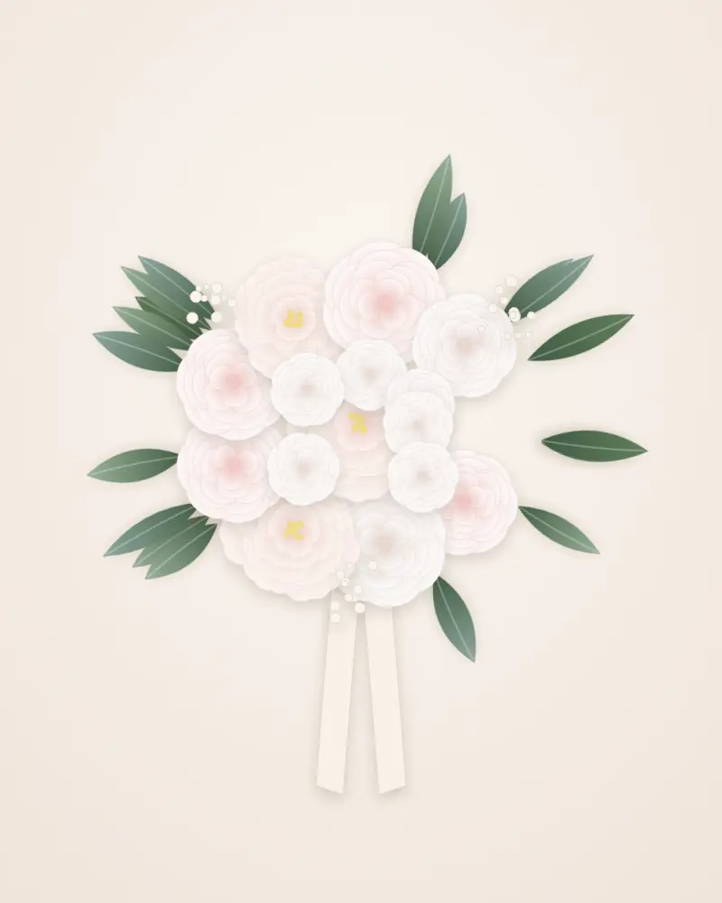
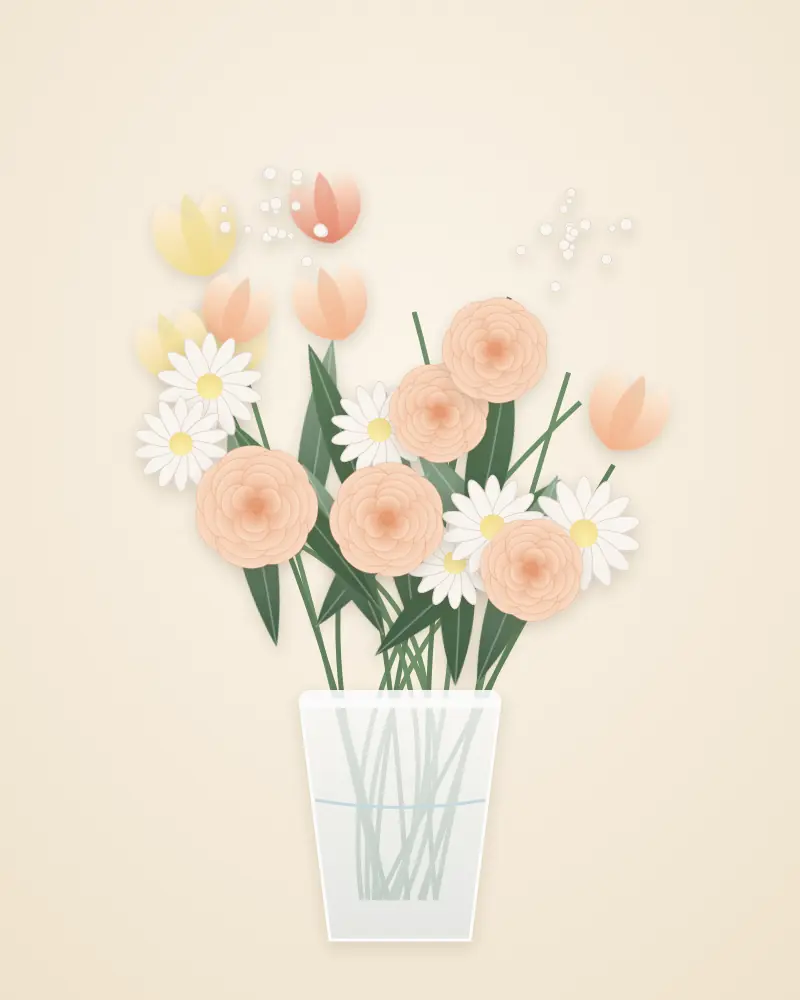

Cosa facciamo
Composizioni per ogni occasione
-
Bouquet & rose
Mazzi stagionali, rose singole o in composizione, regali per compleanni, anniversari e ogni ricorrenza.
-
Matrimoni & eventi
Bouquet da sposa, archi floreali, allestimenti di chiesa e location progettati insieme a voi.
-
Centrotavola & cerimonie
Composizioni per tavole, battesimi, comunioni, cene aziendali e omaggi floreali per ogni cerimonia.
-
Piante da interno
Piante verdi e fiorite per casa e ufficio, con consigli pratici per farle crescere al meglio.
Dal nostro laboratorio
Galleria
Le immagini attuali sono illustrazioni segnaposto: sostituiscile con le foto delle vostre composizioni.
- Bouquet di roseRose rosa, gypsophila ed eucalipto
- Arco nuzialeAllestimento cerimonia
-

Bouquet da sposaPeonie e rose avorio -

Bouquet stagionaleTulipani, margherite, ranuncoli - Centrotavola con candelePer cene ed eventi
- OrtensieAzzurre e lilla, in vaso
- MonsteraPiante da interno
- Box di rose rosseUn regalo che resta


Il nostro metodo
Dal primo racconto all'ultimo petalo
Che sia un mazzo per sorprendere qualcuno o l'allestimento del giorno più importante, partiamo sempre da te: dai colori che ami, dallo stile della cerimonia, dai fiori di stagione più belli.
-
Raccontaci l'occasione
Passa in negozio, chiamaci o scrivici: data, stile, colori e budget.
-
Progettiamo insieme
Ti proponiamo fiori e abbinamenti scelti in base alla stagione.
-
Composta a mano
Prepariamo la composizione fresca, pronta per il giorno concordato.
Vieni a trovarci
Contatti & orari
Il Portico Fiori
-
Indirizzo Strada Genova, 108/D
10024 Moncalieri (TO) Indicazioni stradali (si apre in una nuova scheda) -
Telefono 011 647 1341
-
Email info@ilporticofiori.com
-
Partita IVA 08553360010
Orari di apertura
| Lunedì | Chiuso |
|---|---|
| Martedì | 09:00 – 12:30 · 15:30 – 19:30 |
| Mercoledì | 09:00 – 12:30 · 15:30 – 19:30 |
| Giovedì | 09:00 – 12:30 · 15:30 – 19:30 |
| Venerdì | 09:00 – 12:30 · 15:30 – 19:30 |
| Sabato | 09:00 – 12:30 · 15:30 – 19:30 |
| Domenica | Chiuso |
Nei giorni festivi e in prossimità delle ricorrenze gli orari possono variare: chiamaci per conferma.
La mappa interattiva è fornita da Google: caricandola, Google potrà impostare i propri cookie.